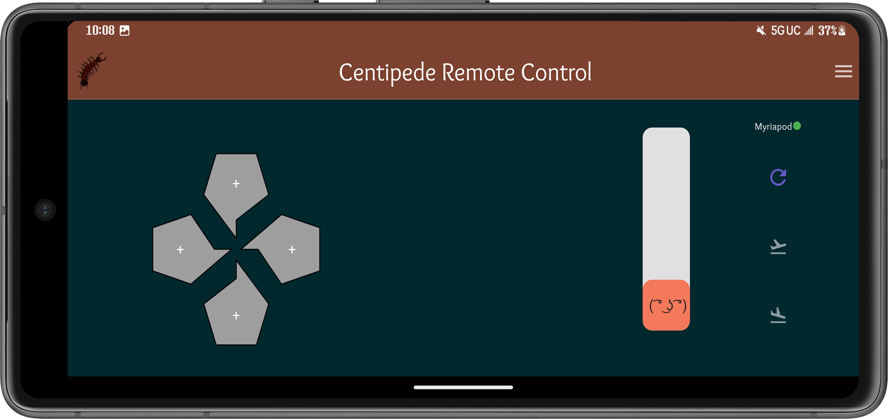
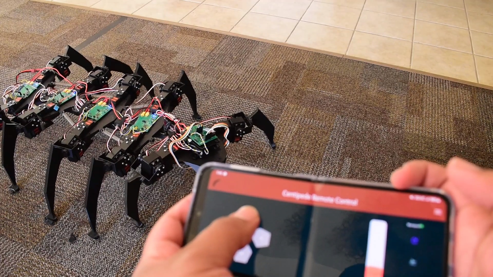
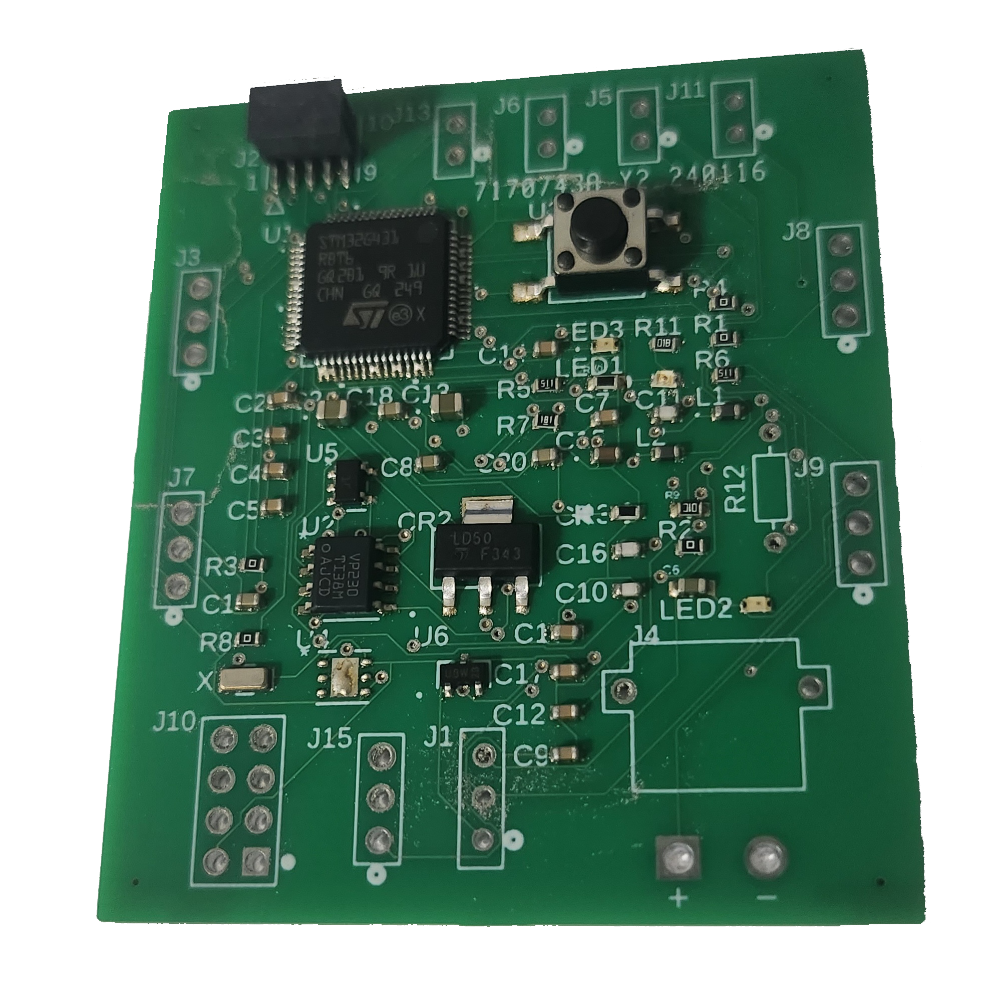
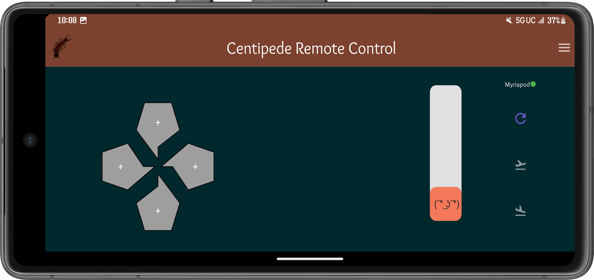
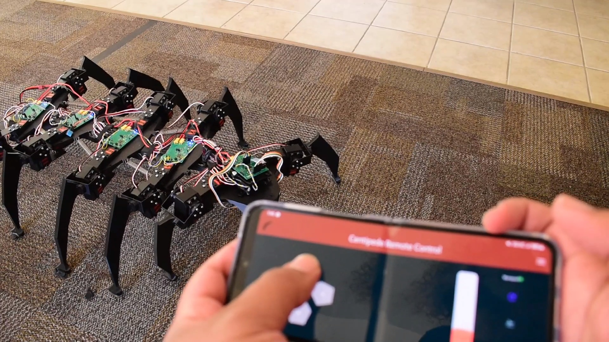
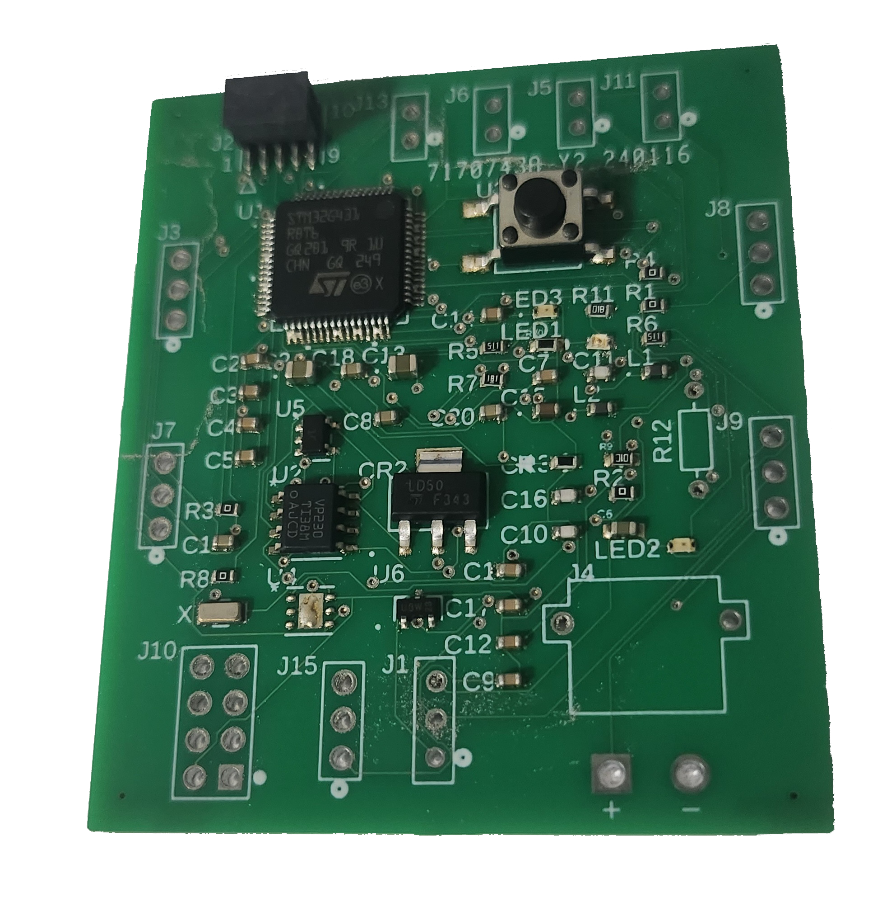

- Centipede Robot -

 





Responsible for PCB design and the Mobile Application developement, this group project was able to create a protype for a modular robotic centipede platfrom. This prototype succesfully demonstrated the feasibility, of utilizing a modular centipede in mobile robotics. With ability to attach and detach myriapod segments with ease, the robot is incredinly versitile in its ability to add functionality tailored to any client. My responsibilities were to design electrical schematics and version 1 of the printed circuit board on the centipede. As well as create and design, using Flutter, the Android application that is how the robot is remote controlled (via Bluetooth).
- VeggieTasks Manager App -
An Android application designed in Flutter to be a way of gamifying tasks and managing them. The app uses a point system to vary levels of importance/urgency, an includes user input information such at due dates and ingredients. As well as being a task manager the app also manages recipes and tracks which ingredients you were able to get ahold of in the tasks screen.
- Document scanning software -
Using Computer Vision techniques, I created a progam in Python that is able to take any image with a sheet of paper and crop it out and resize to document size. First grayscalling the image, then turning that into a binary image that converts every pixel to either 100% black or 100% white. Afterwards detect contours to filter the image to remove nose and focus on the document. Then, using corner detection, finding the corners (and their coordinates) of the paper. With these acknowledged, we can then warp the image to our liking, in this case an upright triangle. Although this uses traditional computer vision techniques, future versions could be trained on image data (machine learning) rather than relying on filtering.
- Salamander Robot -

A small alternative mobility robot with the objective of moving without the use of wheels. I primarily designed the embedded systems, the arduino code and wiring of components, power delivery, motor control, etc.
- Computer Processor Cache Simulator -
Developed in C, this program is made to simulate the movement of the cache within a CPU's hierarchy using cache replacement policies like LRU (Least Recently Used), and FIFO to parse when data is accesed or moved.